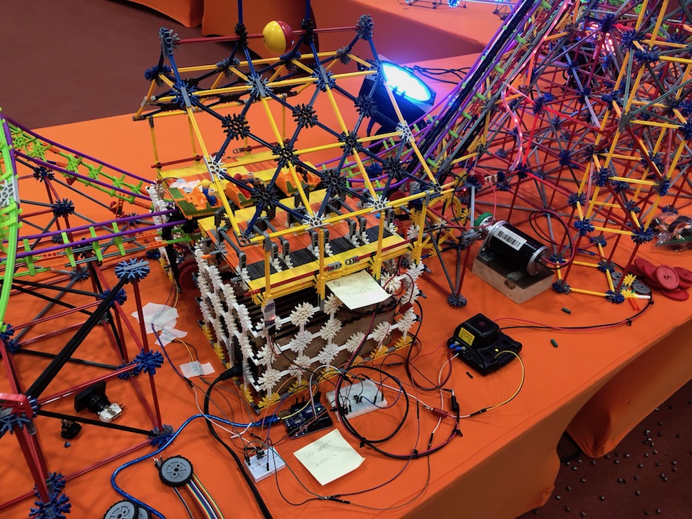
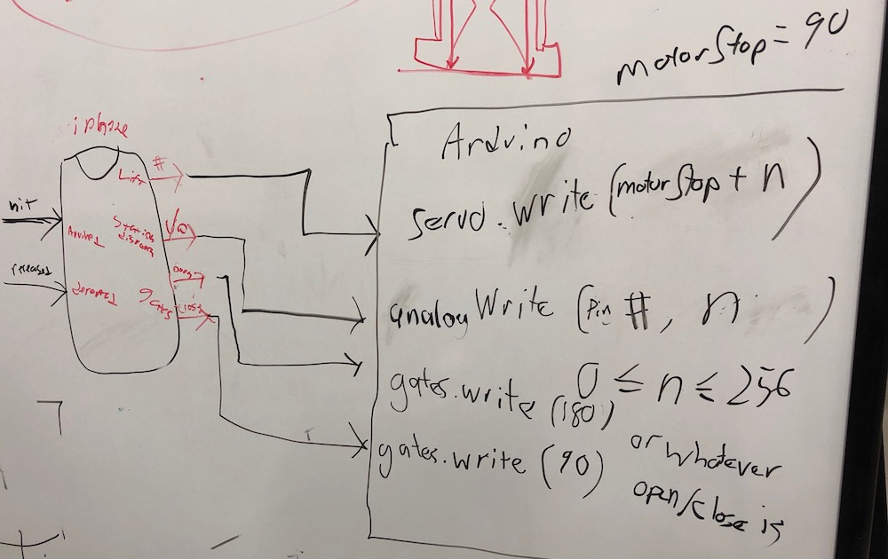
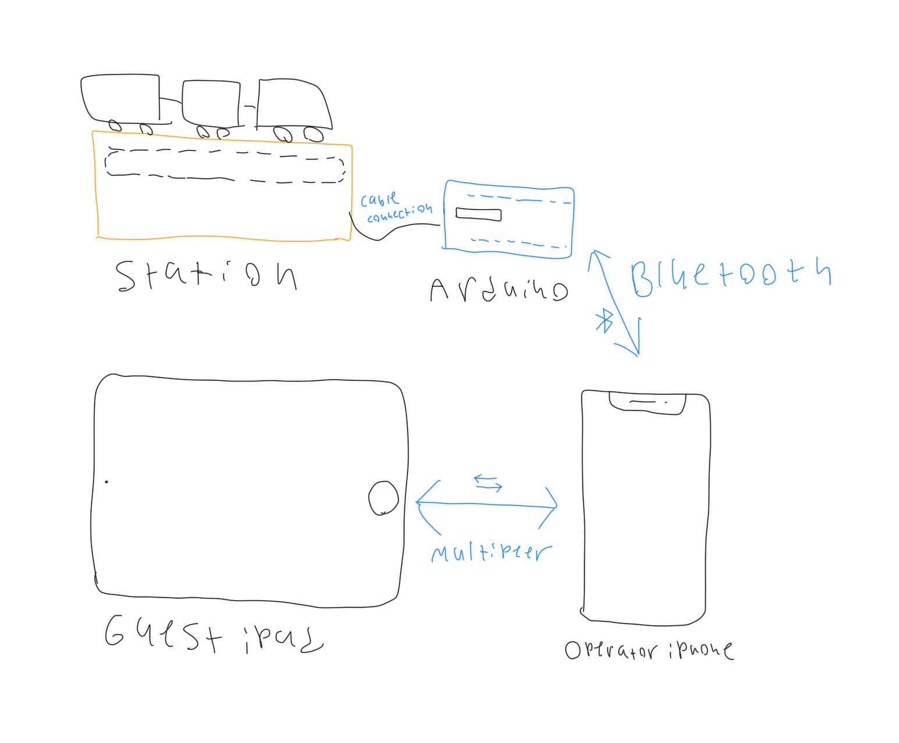
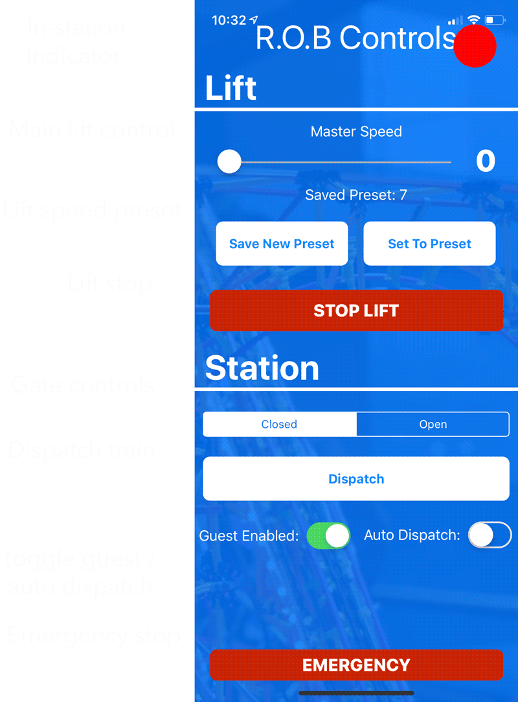
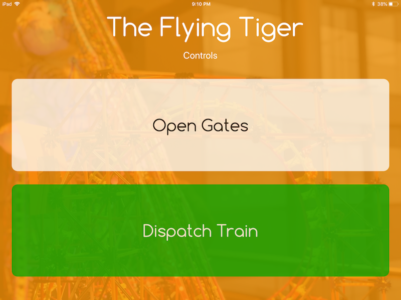
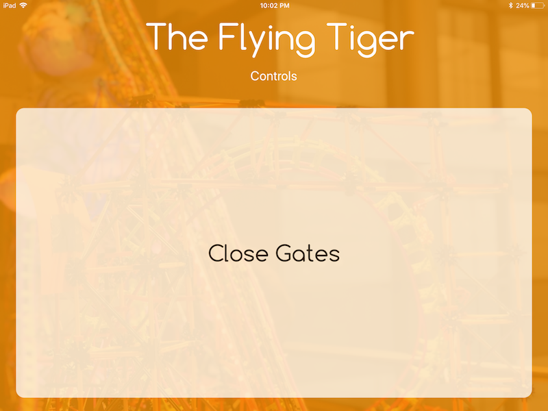
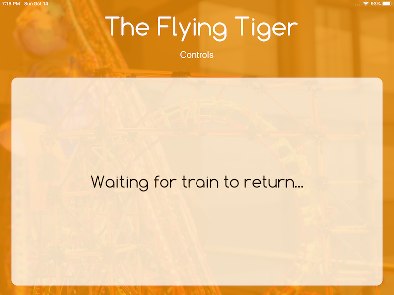

The goal was to automate a model roller coaster (made of the popular Knex building toy) using an Arduino and an iOS application. The iOS app communicates with an Arduino which controls the three motors and sensor incorporated into the station. This allows the operator to control the coaster and guest to interact with it.
The Coaster
Each year during Rochester Institute of Technology's Imagine RIT festival, the RIT Theme Park Enthusiasts have an exhibit featuring a large scale model roller coaster. Previously, the model's only powered feature was its lift hill which was difficult to control and had no guest interaction. The Station Controller simplifies the use of the lift hill by club members while also adding features for guest interaction.
Components

The station has three main "moving" components. These include the lift hill, the station gates, and the dispatch system. There is also a sensor to detect the car.
Dispatch System: Powered by a standard DC motor, the dispatch system brings the stopped car in the station to the lift hill.
Station Gates: A servo motor is connected to a rod which pivots all four station gates.
Lift hill: A CIM motor powers the chain lift that brings the car up the first hill. This motor stays on.
Platform Sensor: An IR sensor mounted on the back of the left platform detects if the train is in the station or not.
Component Flow

Flow from iPhone to Arduino to components.
Connections

The Arduino which controls all components is connected via Bluetooth to the operator iOS device. That iOS device acts as a "master controller" which can control all components without limitation. Up to ten guest devices can connect to the operator device via multipeer.
Demo
Basic demo of the three components working together.
Apps
Operator Interface
The operator interface allows all components to be controlled without limitation. The operator can also choose to disable guest access and activate auto dispatch with dispatches the train after prolonged periods of inactivity.

Guest Interface
The guest interface allows spectators to interact with the model with a more "realistic" roller coaster feel, and without the risk of interrupting the functionality of the coaster.
Standard

Shown when train is sitting in station and gates are closed.
Gates Open

Shown when station gates are open. Guests can only dispatch the train when the gates are closed.
Ride in progress

Shown when the train is not in the station, triggered by the IR sensor on the platform. Guests cannot open gates or dispatch while a ride is in progress.